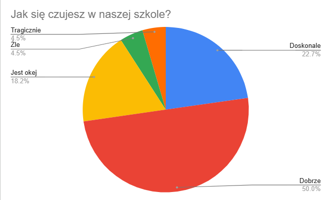
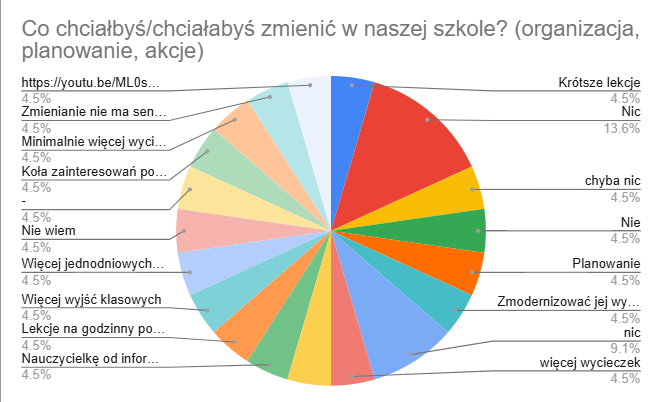
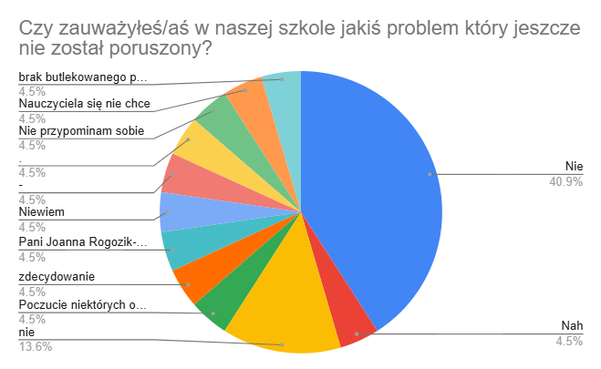

Poznanie opinii uczniów na wybrany temat poprzez przeprowadzenie ankiety
Nauczyć się tworzyć pytania ankietowe
Zebrć i przeanalizować odpowiedzi
Organizacja pracy
Rejestr doświadczeń
W trakcie projektu:
przygotowałem pytania do ankiety
przeprowadziłem sondę wśród uczniów
zapisałem wyniki w formie arkusza i wykresów
Zebrane materiały:



Analiza wyników
Jak się czujesz w naszej szkole?
Większość uczniów czuje się w szkole dobrze lub bardzo dobrze, co świadczy o raczej pozytywnej atmosferze.
Jednak niewielka grupa uczniów nie czuje się komfortowo, co pokazuje, że są obszary do poprawy.
Czy zauważyłeś/aś w naszej szkole jakiś problem który jeszcze nie został poruszony?
Znaczna cześć uczniów nie zauważyła żadnego problemu,jednak niektórzy chcą poprawy sposobu nauczania kilku naczucieli.
Co chciałbyś/chciałabyś zmienić w naszej szkole?
Uczniowie mają różne potrzeby, ale najczęściej chcą zmian, które poprawią komfort nauki i uatrakcyjnią czas w szkole.
Najczęściej wymieniane są: więcej zajęć pozalekcyjnych ,krótsze lekcje oraz większa ilość przerw między lekcjami.
Rejestr naukowy
Co udało mi się zrobić?
Udało mi się stworzyć ankietę i zebrać odpowiedzi od uczniów
Jakie cele zostały osiągnięte?
Nauczyłem się, jak przeprowadzać sondę i przeanalizować wyniki
Co planuję robić dalej?
Chcę w przyszłości robić więcej ankiet i lepiej analizować opinie ludzi